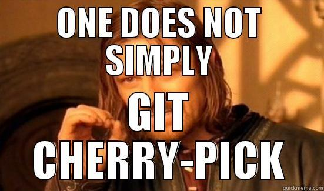

Git for hackers

A practical guide for git with real life scenarios which can make your git experience better.
Git for hackers
When I refer to hackers, I mean those who love to go behind the things to discover how things work and break them (somehow). Originally, hacker simply meant advanced computer technology enthusiast (both hardware and software) and adherent of programming subculture who used their skill to achieve a goal or overcome an obstacle.
If you don’t use git, you should start learning it now!
Disclaimer
This isn’t a tutorial on how to use git or it’s going to make to the best git user but will inspire you to make your git experience better.
If you don’t know what’s git or version control, you should read this book : Pro Git from git’s offical website.
I also assume you have git installed on your machine, and you have some basic experience with Linux Shell.
Introduction
In this tutorial, I am going to share some tips and tricks that I have tested that would make it easy to git.
- Uncommon git commands.
- Git & Bash aliases.
- Github Command line tools :
gh. - Markdown everywhere.
Uncommon git commands
Anyone who ever used git, will know this flow (and yes, with deep understanding of how git works, you won’t use other commands).
sequenceDiagram
participant Working Tree
participant Staging Area
participant Local Repo
Working Tree ->>Staging Area: git add
Staging Area ->>Local Repo: git commit
Local Repo ->>Staging Area: git reset
Staging Area ->>Working Tree: git restore --staged
Local Repo ->>Working Tree: git checkout
participant Remote
Local Repo ->>Remote: git push
Remote ->>Local Repo: git pull
Even though there are some hidden gems that will make your life easier:
1. git stash
Stash the changes in a dirty working directory away
when you want to record the current state of the working directory and the index, but want to go back to a clean working directory. The command saves your local modifications away and reverts the working directory to match the HEAD commit.
The modifications stashed away by this command can be listed with git stash list, inspected with git stash show, and restored (potentially on top of a different commit) with git stash apply. Calling git stash without any arguments is equivalent to git stash push
git stash -p
2. git cherry-pick
Apply the changes introduced by some existing commits to your repo.
git cherry-pick is a very useful command to use in case you want to have some commits to be picked by reference and added to the current working HEAD.
git cherry-pick can be useful for:
- Applying hotfixs: When you want to apply a hotfix in one branch to other branches.
- Selectively merging changes: When you want to merge only specific commits from one branch into another, rather than merging the entire branch.
- Reordering commits: You can use git cherry-pick to reorder commits in the target branch or even apply commits from different parts of the source branch to achieve a specific commit order.

- When commits depend on each other: If the commits you want to cherry-pick have dependencies on other commits in the source branch, cherry-picking them individually can lead to errors or missing context
- Maintaining a clean commit history: Cherry-picking can lead to a less clean and linear commit history, as it introduces commits from another branch with different commit messages and timestamps.
2. git blame
View the revision history of a file, showing who last modified each line and when. It’s a useful tool for tracking changes and identifying the author and commit associated with each line of code in a file.
When git blame can be useful:
- Bug Tracking: When trying to identify the source of a bug, you can trace back commits.
- Security Auditing: For security-conscious projects, git blame can be employed to trace when and by whom security-related changes were made, aiding in security audits and investigations.
Hacks
When you are interested in finding the origin for lines 40-60 for file foobar:
|
|
A particularly useful way is to see if an added file has lines created by copy-and-paste from existing files. Sometimes this indicates that the developer was being sloppy and did not refactor the code properly. You can first find the commit that introduced the file with:
|
|
and then annotate the change between the commit and its parents, using commit^! notation:
|
|
git blame is that they use slightly different output formats.
3. git bisect
Use binary search to find the commit that introduced a bug in your code.
This command uses a binary search algorithm to find which commit in your project’s history introduced a bug. You use it by first telling it a “bad” commit that is known to contain the bug, and a “good” commit that is known to be before the bug was introduced. Then git bisect picks a commit between those two endpoints and asks you whether the selected commit is “good” or “bad”. It continues narrowing down the range until it finds the exact commit that introduced the change.
Automating git bisect
Suppose we want to find the commit which first intruduced a security flaw in our codebase.
The bug happens in feat/master (Bad) and version v3.4 (Good)
|
|
To check for the bug we (somehow) know that making a POST request to our backend with foobar=admin allows any user to login, so returning 200 is a successful login.
|
|
The automation is then done by just passing the script to git bisect:
git bisect run login.sh
4. git archive
Creates an archive of the specified format containing the tree structure for the named tree, and writes it out to the standard output. If <prefix> is specified it is prepended to the filenames in the archive.
git archive can be useful if you want to create a compressed tarball for v1.4.0 release and upload somewhere or do something with it.
|
|
Useful git scenarios
Creating an orphan branch
An orphan branch is a branch that starts with no commit history but exists alongside your main development branch. It can be useful in specific situations:
- Separate Documentation or Website: like this blog website, it has 2 branches one for writing markdown files, and the other orphan branch for the generated website.
- Starting a New Project: if for example you’re creating a full stack application and you want to make the server side and front side in one big repo (which I don’t recommend) you can have 2 branches, main one and the orphan frontend (coz you know backend comes first).
|
|
Say Hello :D
Sponsor